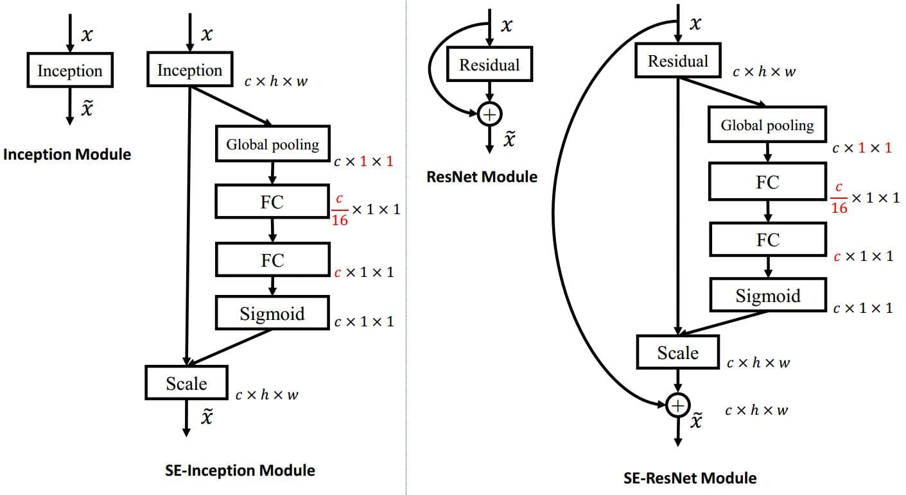

![]()
canny
Saliency Detection via Graph-Based Manifold Ranking
DenseCRF
HED（Holistically-Nested Edge Detection）
多尺度的结构对比
- multi-stream: 如inception，每个网络通过不同参数与receptive field大小的不同，获得多尺度的结果。
- skip-layer net: 如resnet、densenet，跳层连接使得浅层的小尺度与深层的大尺度结合，获得多尺度的特征。
- single model on multi-scale inputs: 单一网络，图像resize方法得到多尺度进行输入，在训练和测试时加入，提高模型对多尺度的泛化能力。
- training independent networks: 从1演化来，通过多个不同深度的独立网络分别对不同尺度进行预测。
- holistically-nested networks: 从4演化来，类似地是一个相互独立多网络多尺度预测系统，但是将multiple side outputs组合成一个单一深度网络。
1是横向的，2是纵向的，3是trick，4是用上了集成学习以提高多尺度的拟合能力，5是结合具体任务（边缘检测通过多个回归预测得到结合的边缘图往往比使用一个输出的loss函数进行单一的回归预测效果更好）的改进。
DSS（Deeply Supervised Salient Object Detection with Short Connections）


PFA（Pyramid Feature Attention Network for Saliency detection）%E6%80%BB%E7%BB%93.md](https://github.com/lartpang/Machine-Deep-Learning/blob/e1f9a9fa7843f80350b22ae27e7136d2a9bfe80d/图像分割/Pyramid Feature Attention Network for Saliency detection(2018)总结.md))
深层的特征通常包含全局上下文感知信息，这些信息适合于正确定位显著区域。 浅层的特征包含空间结构细节，适合于定位边界。这些方法的缺点是，融合不同尺度的特征但是并未考虑到每一层不同的贡献。对高级语义特征和低维空间结构特征做attention，以实现在显著性检测中的更有效的特征提取。
上下文感知金字塔特征提取（Context-aware PyramidFeatureExtraction）
空洞卷积空间池化金字塔（Atrous Spatial Pyramid Pooling）
ASPP：一个类似于SPP的结构，在给定的输入上以不同采样率的空洞卷积并行采样，相当于以多个比例捕捉图像的上下文，以应对多个尺度上存在对象的问题。
CPEF

将通过CFE后得到的特征图concat到一起，通过1x1卷积降维获得三种不同比例的特征，然后将两个较小的特征上采样到最大的一个，最终提取到具有尺度和形状不变性的特征。
注意力机制
由于不同级别有不同特征，采用高级通道注意方式和低级的空间注意力，以便选择有效功能。另外，不对高级特征使用空间注意力，因为高级特征包含高抽象语义，不需要过滤空间信息。低级特征也不使用通道注意机制，因为低级特征的不同通道之间几乎没有语义差异。
CA

同SENet。其中称全局池化为 squeeze 操作，从而实现获得全局感受野的能力，每一个通道上的特征图均池化为一个实数；称两个 FC 加 sigmoid 操作为 excitation 操作，通过两个全连接层来为特征通道间的相关性显示地建模；最后的 scale 为 reweight 操作，即完成在通道维度上的对原始特征的重标定。